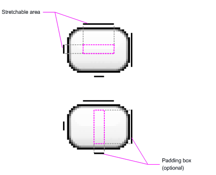

When writing an application, it's important to consider exactly what your graphical demands will be. Varying graphical tasks are best accomplished with varying techniques. For example, graphics and animations for a rather static application should be implemented much differently than graphics and animations for an interactive game. Here, we'll discuss a few of the options you have for drawing graphics on Gaia and which tasks they're best suited for.
The Gaia framework APIs provides a set 2D drawing APIs that allow you to render your own custom graphics onto a canvas or to modify existing Widgets to customize their look and feel. When drawing 2D graphics, you'll typically do so in one of two ways:
Option "b," drawing to a Canvas, is better when your application needs to regularly re-draw itself. Applications such as video games should be drawing to the Canvas on its own. However, there's more than one way to do this:
Gaia offers a custom 2D graphics library for drawing shapes and images. The gaia::graphics::drawer package is where you'll find the common classes used for drawing in two-dimensions.
This document discusses the basics of using Drawaer objects to draw graphics and how to use a couple subclasses of the Drawaer class.
A Drawer is a general abstraction for "something that can be drawn." You'll discover that the Drawer class extends to define a variety of specific kinds of drawer graphics, including BitmapDrawer, ShapeDrawer, LayerDrawer, and several more. Of course, you can also extend these to define your own custom Drawer objects that behave in unique ways.
There are some ways to define and instantiate a Drawer: using an image saved in your project resources; or using the normal class constructors. Below, we'll discuss each the techniques (using constructors is nothing new for an experienced developer).
Creating from resource images
A simple way to add graphics to your application is by referencing an image file from your project resources. Supported file types are PNG (preferred), JPG (acceptable) and GIF (discouraged). This technique would obviously be preferred for application icons, logos, or other graphics such as those used in a game.
To use an image resource, just add your file to the res/drawable/ directory of your project.
Example code
The following code snippet demonstrates how to build an ImageWidget that uses an image from drawer resources:
// Instantiate an ImageWidget and define its properties
ImageWidget *i = new ImageWidget(this);
i->setImageResource(R::drawable::my_image);
You may want to handle your image resource as a Drawer object. To do so, create a Drawer from the resource like so:
Resources *res = mContext->getResources();
Drawer *myImage = res->getDrawer(R::drawable::my_image);
A NinePatchDrawer graphic is a stretchable bitmap image, which Gaia will automatically resize to accommodate the contents of the Widget in which you have placed it as the background. An example use of a NinePatch is the backgrounds used by standard Gaia buttons - buttons must stretch to accommodate strings of various lengths. A NinePatch drawer is a standard PNG image that includes an extra 1-pixel-wide border. It must be saved with the extension .9.png, and saved into the res/drawable/ directory of your project.
The border is used to define the stretchable and static areas of the image. You indicate a stretchable section by drawing one (or more) 1-pixel-wide black line(s) in the left and top part of the border (the other border pixels should be fully transparent or white). You can have as many stretchable sections as you want: their relative size stays the same, so the largest sections always remain the largest.
You can also define an optional drawer section of the image (effectively, the padding lines) by drawing a line on the right and bottom lines. If a Widget object sets the NinePatch as its background and then specifies the Widget's text, it will stretch itself so that all the text fits inside only the area designated by the right and bottom lines (if included). If the padding lines are not included, Gaia uses the left and top lines to define this drawer area.
To clarify the difference between the different lines, the left and top lines define which pixels of the image are allowed to be replicated in order to stretch the image. The bottom and right lines define the relative area within the image that the contents of the Widget are allowed to lie within.
Here is a sample NinePatch file used to define a button:
This NinePatch defines one stretchable area with the left and top lines and the drawer area with the bottom and right lines. In the top image, the dotted grey lines identify the regions of the image that will be replicated in order to stretch the image. The pink rectangle in the bottom image identifies the region in which the contents of the View are allowed. If the contents don't fit in this region, then the image will be stretched so that they do.
You can hardware accelerate the majority of the drawing done by the Canvas APIs to further increase their performance. Hardware acceleration carries out all drawing operations that are performed on a Widget's canvas using the GPU. Because of the increased resources required to enable hardware acceleration, your app will consume more RAM. In Gaia, hardware acceleration is enabled by default. You can disable hardware acceleration by calling setLayerType(View::LAYER_TYPE_SOFTWARE, NULL) in some particular situations that you don't want hardware acceleration off.
Hardware acceleration in Gaia framework utilizes a new drawing model that utilizes display lists to render your application to the screen. To fully understand display lists and how they might affect your application, it is useful to understand how Gaia draws widgets without hardware acceleration as well. The following sections describe the hardware-accelerated drawing models.
Hardware accelerated drawing model
The Gaia system still uses invalidate() and draw() to request screen updates and to render widgets. Instead of executing the drawing commands immediately, the Gaia system records them inside display lists, which contain the output of the widget hierarchy's drawing code. Another optimization is that the Gaia system only needs to record and update display lists for widgets marked dirty by an invalidate() call. Widgets that have not been invalidated can be redrawn simply by re-issuing the previously recorded display list. The drawing model contains three stages:
With this model, to ensure that the Gaia system records a widget's display list, you must call invalidate(). Forgetting to do so causes a widget to look the same even after changing it, which is an easier bug to find if it happens.
Draw on a Widget
If your application does not require a significant amount of processing or frame-rate speed (perhaps for a chess game, a snake game, or another slowly-animated application), then you should consider creating a custom Widget component and drawing with a Canvas in Widget::onDraw(). The most convenient aspect of doing so is that the Gaia framework will provide you with a pre-defined Canvas to which you will place your drawing calls.
To start, extend the Widget class (or descendant thereof) and define the onDraw() callback method. This method will be called by the Gaia framework to request that your Widget draw itself. This is where you will perform all your calls to draw through the Canvas, which is passed to you through the onDraw() callback.
The Gaia framework will only call onDraw() as necessary. Each time that your application is prepared to be drawn, you must request your Widget be invalidated by calling invalidate(). This indicates that you'd like your Widget to be drawn and Gaia will then call your onDraw() method (though is not guaranteed that the callback will be instantaneous).
Inside your Widget component's onDraw(), use the Canvas given to you for all your drawing, using various Canvas::draw...() methods, or other class draw() methods that take your Canvas as an argument. Once your onDraw() is complete, the Gaia framework will use your Canvas to draw a Bitmap handled by the system.
Unsupported Drawing Operations
The 2D rendering pipeline supports the most commonly used Canvas drawing operations as well as many less-used operations. All of the drawing operations that are used to render applications that ship with Gaia, default widgets and controllers, and common advanced visual effects such as reflections and tiled textures are supported. The following list describes known operations that are not supported with hardware acceleration:
Paint
In addition, some operations behave differently with hardware acceleration enabled:
Paint
PorterDuffXfermode
If your application is affected by any of these missing features or limitations, you can turn off hardware acceleration for just the affected portion of your application by calling:
setLayerType(View::LAYER_TYPE_SOFTWARE, NULL)
This way, you can still take advantage of hardware acceleratin everywhere else.
When you're writing an application in which you would like to perform specialized drawing and/or control the animation of graphics, you should do so by drawing through a Canvas. A Canvas works for you as a pretense, or interface, to the actual surface upon which your graphics will be drawn ! X it holds all of your "draw" calls. Via the Canvas, your drawing is actually performed upon an underlying Bitmap, which is placed into the window.
In the event that you're drawing within the onDraw() callback method, the Canvas is provided for you and you need only place your drawing calls upon it. However, if you need to create a new Canvas, then you must define the Bitmap upon which drawing will actually be performed. The Bitmap is always required for a Canvas. You can set up a new Canvas like this:
Bitmap b = Bitmap::createBitmap(100, 100, Bitmap::CONFIG_ARGB_8888);
Canvas c = new Canvas(b);
Now your Canvas will draw onto the defined Bitmap. After drawing upon it with the Canvas, you can then carry your Bitmap to another Canvas with one of the Canvas::drawBitmap(Bitmap,...) methods. It's recommended that you ultimately draw your final graphics through a Canvas offered to you by Widget::onDraw() (see the following sections).
The Canvas class has its own set of drawing methods that you can use, like drawBitmap(...), drawRect(...), drawText(...), and many more. Other classes that you might use also have draw() methods. For example, you'll probably have some Drawer objects that you want to put on the Canvas. Drawer has its own draw() method that takes your Canvas as an argument.
Gaia includes support for high performance 2D and 3D graphics with the Open Graphics Library (OpenGL), specifically, the OpenGL ES API. OpenGL is a cross-platform graphics API that specifies a standard software interface for 3D graphics processing hardware. OpenGL ES is a flavor of the OpenGL specification intended for embedded devices. Gaia supports OpenGL ES 1.0 and 1.1 API specifications as well as OpenGL ES 2.0 API specification. The fundamental way you can use OpenGLES APIs in Gaia is described in OpenGL Framework.txt
The SurfaceWidget is a special subclass of widget that offers a dedicated drawing surface within the widget hierarchy. The aim is to offer this drawing surface to an application's secondary thread, so that the application isn't required to wait until the system's widget hierarchy is ready to draw. Instead, a secondary thread that has reference to a SurfaceWidget can draw to its own Canvas at its own pace.
To begin, you need to create a new class that extends SurfaceWidget. The class should also implement SurfaceHolderCallback. This subclass is an interface that will notify you with information about the underlying Surface, such as when it is created, changed, or destroyed. These events are important so that you know when you can start drawing, whether you need to make adjustments based on new surface properties, and when to stop drawing and potentially kill some tasks. Inside your SurfaceWidget class is also a good place to define your secondary Thread class, which will perform all the drawing procedures to your Canvas. For eg. to create a custom SurfaceWidget class the syntax could be:
class CustomizedSurfaceWidget : public SurfaceWidget, public SurfaceHolderCallback { }
This custom SurfaceWidget object can be placed over LinearController or a AbsoluteController like any other widget. So the onInit() of the Page would look somewhat as follows:
void SurfaceWidgetTestPage::onInit(Persistence* const p) {mpScene = Scene::SceneFactory(this); mpCont = new Context(this); // Create a touch listener for SurfaceWidget mpListener = new CustomizedClickListener(this); mpWidget = new CustomizedSurfaceWidget(mpCont); mpWidget->setId(0); mpWidget->init(); mpWidget->setOnClickListener(mpListener); // Control Button mpButton = new Button(static_cast<Page*>(this)); mpButton->setId(1); mpButton->setText("Stop"); mpButton->setOnClickListener(mpListener); // Linear Layout mpPara = new ControllerParams(1080, 960); mpLinearController = new LinearController(this); mpLinearController->setOrientation(LinearController::VERTICAL); mpLinearController->addWidget(mpWidget, mpPara); mpLinearController->addWidget(mpButton); mpScene->attachController(mpLinearController); mpScene->setupSceneLayout();}
As seen in the above code snippet, a touch listener can be attached to SurfaceWidget using setOnClickListener
A simple touch listner can be initialised as:
class CustomizedClickListener : public gaia::core::OnClickListener {public: explicit CustomizedClickListener(gaia::core::Page* page); void onClick(gaia::core::Widget* widget); private: gaia::core::Page* mpPage;};
Instead of handling the Surface object directly, you should handle it via a SurfaceHolder. So, when your SurfaceWidget is initialized, get the SurfaceHolder by calling getHolder(). You should then notify the SurfaceHolder that you'd like to receive SurfaceHolder callbacks (from SurfaceHolderCallback) by calling addCallback() (pass it this), as follows:
void CustomizedSurfaceWidget::init() {getHolder()->addCallback(*this);}
Then override each of the SurfaceHolderCallback methods inside your SurfaceWidget class like:
surfaceCreated() - This is called immediately after the surface is first created.
surfaceDestroyed() - This is called immediately before a surface is being destroyed.
surfaceChanged() - This is called immediately after any structural changes (format or size) have been made to the surface.
In order to draw to the Surface Canvas from within your second thread, you must pass the thread your SurfaceHandler and retrieve the Canvas with lockCanvas(). You can now take the Canvas given to you by the SurfaceHolder and do your necessary drawing upon it. Once you're done drawing with the Canvas, call unlockCanvasAndPost(), passing it your Canvas object. The Surface will now draw the Canvas as you left it. Perform this sequence of locking and unlocking the canvas each time you want to redraw. So a typical draw sequence for SurfaceWidget will look like:
void DrawRunnable::run() {/*Refresh Screen*/ if (mpOuterRef->getRunStatus() == true) { Canvas* canvas = mpOuterRef->getHolder()->lockCanvasN(); mpOuterRef->doDraw(*canvas); mpOuterRef->getHolder()->unlockCanvasAndPost(*canvas); DELETE(canvas); mpOuterRef->run(); }}
In this example all the drawing operation is done inside doDraw() function.
For reference, you can see sdk/example/core/SurfaceWidgetTest/